A farmer who loses a season to salt or heat has no way to get that income back. ReLeaf would sell them a sealed machine that makes the protectant on their own farm, on the day the stress arrives. This page is the case for that machine as a business: who owns it, who pays for it, what it costs, and what would stop it.
SectionEngagement
Written byEntrepreneurship, human practices
Last updated20 September 2026
StatusDraft, 11 fixes open
Contents
On this page
Overview
ReLeaf is an optogenetic bioreactor that makes protective proteins where the crop is standing. A sealed vessel of engineered Bacillus subtilis sits at the edge of a field or a greenhouse, watches temperature, soil conductivity and humidity, and when a stress threshold is crossed a light signal switches the culture from growing to producing. A hollow-fibre membrane keeps every cell inside. Only the cell-free protectant leaves, into an irrigation line the farm already has.
Our mission is to strengthen agricultural resilience by cutting the crop losses that combined biotic and abiotic stress causes, and by cutting how much chemical a farm has to apply to hold its yield steady. The vision behind it is shorter: every farmer is a biomanufacturer. A smallholder should be able to keep a small factory for biostimulants at the end of their own field, instead of waiting on a bioprocessing chain that takes months and a retail markup to reach them.
The commercial argument has three parts, and the rest of this page works through them in order. The product is a platform, so the hardware is sold once and the biology is sold again every season. The buyer is usually not the beneficiary, so the plan is written as a social enterprise with a cross-subsidy inside it. And the first gate is legal, not technical: what ReLeaf may be called in a given market decides how long it takes to get there.
The problem
Abiotic stress, mostly heat and soil salinity, is held to account for about half of the world's annual crop yield losses, and climate change is making both more frequent and more severe. A one degree rise in average growing-season temperature takes roughly 6.2% off rice yield. More than a fifth of the world's irrigated farmland is already measurably affected by salinity, and about three more hectares go out of production every minute.
The people carrying that loss are the ones least able to absorb it. Smallholders grow 70 to 80% of the world's food, and in many developing sub-regions more than 80% of what is actually eaten [6]. In East Asia, including Taiwan, over 90% of agricultural holdings are small family operations averaging under a hectare, and they supply more than 80% of domestic fresh vegetables and fruit. Across more than 500 million smallholder farms, one stress event can remove a whole season's income with nothing behind it.
Heat and salinity rarely arrive alone. They compound, damaging cells in ways neither does by itself, and a plant weakened that way is open to pathogens it would otherwise have shrugged off. A small salinity spike can end as a disease outbreak [1].
Why today's answers miss
Fungicides and synthetic fertilizers are the most accessible response and they are applied broadly, on a schedule, before anyone knows whether the stress will come. That drives overuse, degrades soil, and adds an input cost to a farm that is already thin. Bred or engineered stress-tolerant varieties work, but they take a decade of development and approval, which is slower than the weather is changing. Shade structures, irrigation controllers and sensor platforms report conditions accurately and then hand the farmer a number to interpret and an intervention to carry out by hand.
Commercial biostimulants have the opposite problem from ours. They are manufactured centrally, shipped, and stored, so they degrade on a shelf, cost money to move, and cannot change what they contain when a heatwave turns into an outbreak. A protectant made on the farm on the morning it is needed has no shelf life to lose.
The product
What a farm buys
The minimum sellable version is three things: a sealed bioreactor installed once, a freeze-dried B. subtilis cartridge that is replaced when it runs out, and a monitoring app that shows the farm what the device is reading and doing. The hardware is the platform and the cartridge is the consumable, which is the shape Prof. Chen Wen-liang put to us at our first meeting: sell the printer, then sell the ink.
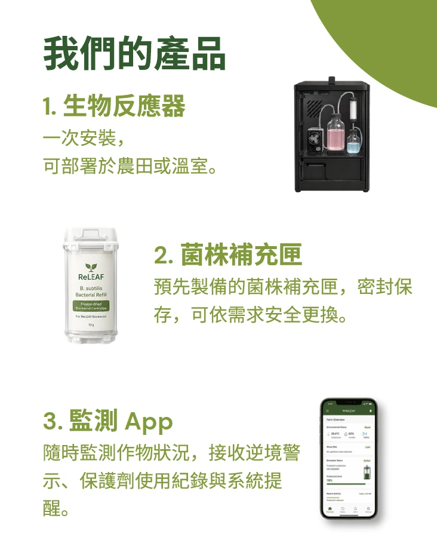
Figure 1. The minimum viable product, as it is described to a Taiwanese farmer. 1 the bioreactor, installed once in a field or a greenhouse. 2 the bacterial refill cartridge, sealed and pre-prepared, swapped when it is empty. 3 the monitoring app, which carries the stress warnings, the protectant log and the service reminders.
What is inside
The device runs two fluid loops that meet at one barrier. On the culture side, engineered B. subtilis grows in a stirred, sealed vessel under green and red LEDs, circulated past an inline photometer and a flow meter and through a hollow-fibre module. On the protectant side, the cell-free filtrate is drawn off the shell of that module into a reservoir, watched by a turbidimeter, and sent out to the crop. Pressure transducers sit either side of the membrane, because the pressure difference across it is how fouling announces itself before it becomes a blockage.
Figure 2. The two loops and the barrier between them. Cells stay on the lumen side of the hollow fibre; secreted protectant crosses to the shell side and leaves through the output line. The turbidimeter in the protectant reservoir is both a product-quality check and a containment check: cloudiness there means cells have crossed.
Component
Its job in the loop
Culture vessel
The growth bottle. Engineered B. subtilis 168 grows here and expresses protectant under light control. Magnetically stirred, sealed with a multi-port cap.
Light source
Green and red LEDs driving the CcaS–CcaR system, switching protectant expression on and off on demand.
pH probe, alkaline bottle and dosing pump
Reports pH continuously; when it drops below setpoint the pump doses base to correct the drift metabolic acid production causes.
Inline photometer
Reads optical density in the flowing culture, so growth is tracked without opening the loop to take a sample.
Flow meter
Measures the real culture flow rate, so a blocked or dry line is caught early.
Hollow fibre membrane
The containment barrier. Cells stay on the lumen side, secreted protectant passes to the shell side.
Pressure transducers
Either side of the membrane and along both loops. The pressure difference shows fouling as it builds, and flags clogs and overpressure anywhere in the tubing.
Droplet sensor mat
Leak detection under the fluidic section, so a drip from a fitting is caught before it is a spill.
Pinch valve
Shuts or diverts the return line without touching the fluid, to isolate the membrane during a fault or a service.
Turbidimeter
Sits in the protectant reservoir and watches for cloudiness, which would mean a containment breach.
How it reaches the crop
The output is a cell-free liquid that feeds straight into a hydroponic line or a soil irrigation line the farm already runs, so nothing about the farm's plumbing has to change. The engineered organism never leaves the machine, which is the whole regulatory argument and most of the trust argument too.
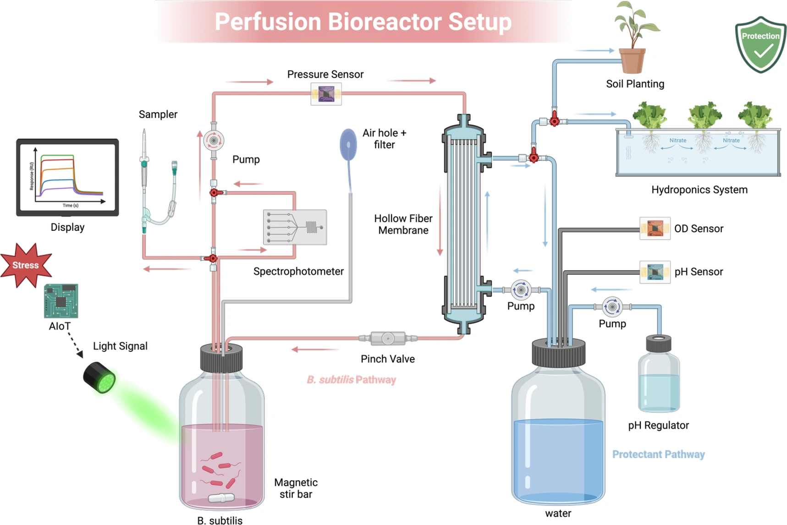
Figure 3. The delivery end. One output line, two destinations: a soil-grown bed or a hydroponic trough. The plant never meets a cell, only the protectant the cells made.
Installing one is a short sequence, and we wrote it as a sequence because the first question every grower asked was what they would have to do themselves.
A ReLeaf technician surveys the farm's soil quality and condition, and how much it varies from one block to another.
From that survey, the number of bioreactors and sensors needed to cover the intended area is set.
The units are installed and connected to the existing distribution system, or to a new one where none exists.
The B. subtilis cartridge goes in. Replacements come from the distributor.
The device is switched on and the on-board screen walks the grower through setup and data collection.
Support afterwards runs through a LINE account, so a question can be asked the way a farmer already asks questions.
What it costs
This is the weakest part of the plan and we would rather mark it than dress it. The business plan carries three different figures for what one deployment costs, in two currencies, and they do not reconcile.
Figure
As written
Where
135,297.77
Total for bioreactor and bacteria. The full plan labels this USD; the wiki draft gives the same number with no unit and then says the installation is “about 100,000 to 150,000 in total”.
Product description
60,000 NTD
Estimated price per bioreactor, offered as the competitive figure against similar machinery.
Value proposition canvas
52,578 + 30,450
Running totals for the bacterial kit and the bioreactor in the cost analysis. No unit, no combined total, and software is still blank.
Cost analysis
What the plan does hold steady is the shape of the price, and that shape came from growers rather than from a spreadsheet. Smallholders in Taiwan and Southeast Asia are paid after a harvest, so a large single payment at the start of a season is the wrong instrument however small the number is. The design answer is a reusable base unit with replaceable seasonal cartridges, priced so that one season of cartridges costs a farm no more than the fungicide it already buys. Where even that is too much, the plan falls back to seasonal rental, shared ownership across a cooperative, or a subsidised purchase.
For comparison, the sensing-and-control platforms we met at exhibitions price a sensor set at about 60,000 TWD and a dosing device at 80,000 to 150,000 TWD, and neither of those makes anything. ReLeaf combines sensing, response and production in one unit, which is where our pricing argument has to live until a bill of materials exists.
Business model
ReLeaf is planned as a social enterprise. A social enterprise earns its own keep while directing that surplus at a group it exists to help, which is what separates it from an NGO that has to raise its running costs every year. The model came to us from Ubuntu Social Enterprise Ghana, which was also the origin of the first project pitch: instead of leaving smallholders to sell raw crops through middlemen at a loss, USE-GH buys and processes for them at a lower rate and teaches them to process for themselves.
We chose it knowing what it costs. A conventional model would make more money from this technology. But the farms that need a stress-responsive bioreactor most are the farms least able to buy one, and a company structured to maximise return would be pushed towards the industrial buyers and away from the people the project was started for. A social enterprise keeps both on the books.
Figure 4. The cross-subsidy, which is the only part of the business model that is unusual. Industrial farms and distributors pay a commercial price. That income, with government and NGO funding, is what puts a unit within reach of a smallholder. The payer and the beneficiary are deliberately different people.
Business model canvas
A standard canvas assumes one exchange of value, with the customer and the beneficiary as the same person. Ours does not, so the canvas is drawn in its social form, with beneficiary segments and payer segments kept apart and a mission-impact block where profit alone would otherwise sit.
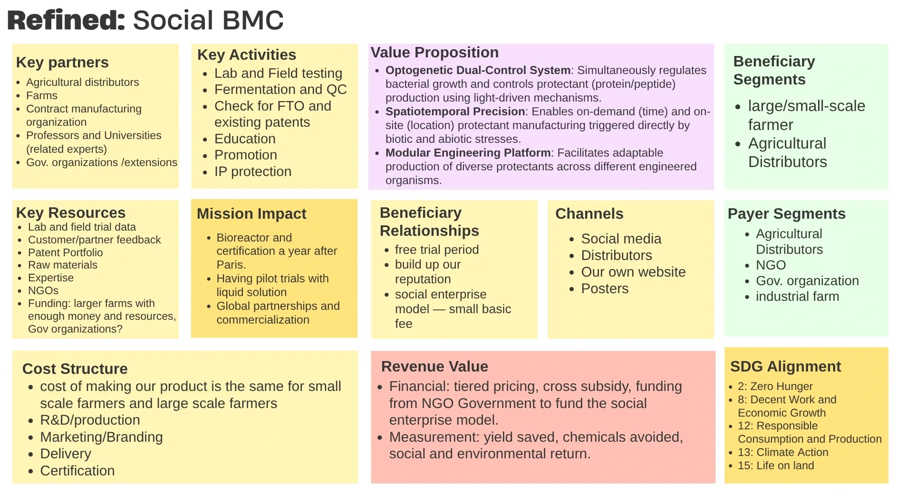
Figure 5. The social business model canvas. The two right-hand columns are the ones that differ from a commercial canvas: beneficiary segments (who the product is for) and payer segments (who the invoice goes to).
Partners, activities and resources
Delivery depends on agricultural distributors, farms and contract manufacturers. Technical direction comes from professors and university groups, and regulatory alignment and community reach come from government organisations and extension stations. The work itself is lab and field testing, fermentation and quality control, freedom-to-operate checks against existing patents, education and outreach, and protecting the intellectual property the rest of it rests on. The assets behind that are trial data, customer and partner feedback, a patent portfolio, raw materials, and the technical expertise to run any of it.
Beneficiaries, payers and channels
The beneficiaries are large and small farmers using the protection, and the distributors who carry it to them. The payers are agricultural distributors, NGOs, government organisations and well-funded industrial farms. A free trial period opens the relationship, and the social-enterprise structure keeps a small basic fee in place for growers who could not meet a commercial one. We reach people through distributor networks, agricultural institutions, social media, our own site, and print in regional agricultural hubs.
Costs and returns
Fixed research and production costs, marketing, delivery logistics and certification are the cost drivers, and unit manufacturing cost is the same whether a device goes to a smallholder or an industrial farm. That is exactly why the cross-subsidy has to exist. Revenue comes from tiered pricing, cross-subsidy and grant funding, and success is measured in yield saved and chemical avoided as much as in money.
What it is aimed at
Working with extension stations, research institutes and cooperatives, the goal is to steady seasonal farm incomes, keep climate-driven debt cycles from starting, keep ancestral land in the family, and leave sustainable farming viable for the generation after this one. That lines up with six UN Sustainable Development Goals:
SDG 2 and SDG 8. Protects yields through severe climate events and steadies farm incomes without adding manual field labour.
SDG 11 and SDG 12. Cuts chemical runoff and operational waste, and builds local food production that can take a shock.
SDG 13 and SDG 15. A climate-adaptation tool that acts before damage, and preserves soil microbiomes and land usability while it does.
Value proposition
Existing management asks a grower to spray repeatedly, watch constantly and maintain often, which costs labour, wastes chemical, pollutes, and is almost never tuned to the conditions of one particular farm. ReLeaf puts detection and treatment in one platform, so the intervention happens when the field asks for it and at the size the field asks for.
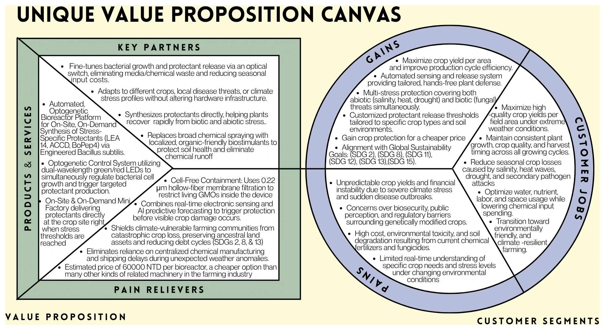
Figure 6. The value proposition canvas. The left square is what ReLeaf offers, the right circle is what a grower is trying to get done, and the join between them is the claim the whole plan rests on.
Three properties carry that claim. The optogenetic dual-control system uses light to regulate bacterial growth and protectant production at the same time, so a culture can reach density and then be switched into output. Spatiotemporal precision means the protectant is made on the day and at the place the stress is, which removes transport delay, shelf-life loss and retail markup at once. And the modular cassette design means the same hardware makes a different protectant for a different stress by swapping what is inside, so a farm buys a platform once.
SWOT
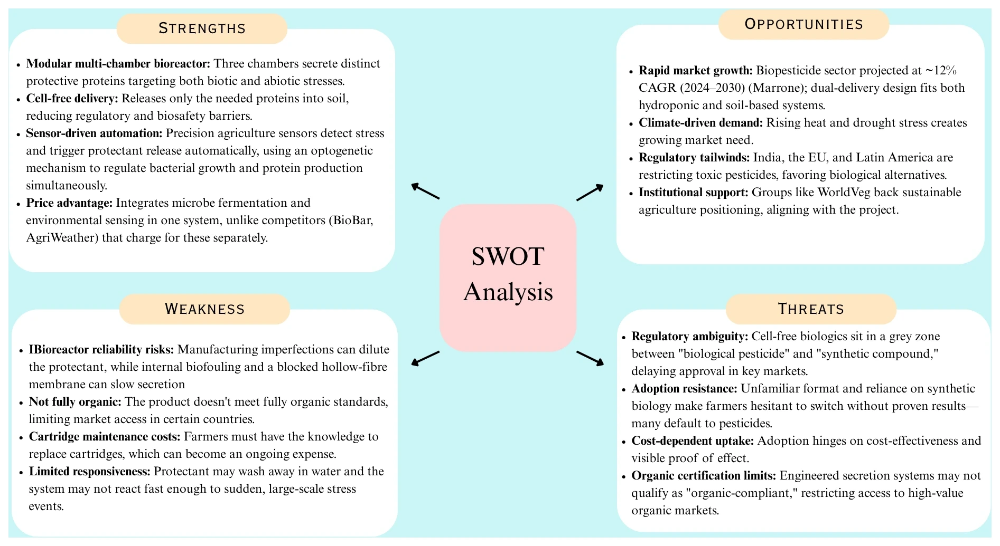
Figure 7. The SWOT in summary. The four paragraphs below are the argument behind it.
Strengths
The modular multi-chamber design lets three protective proteins be produced under separate light triggers, targeting biotic and abiotic stress from the same machine. Cell-free delivery lowers the biosafety and regulatory barrier, because what reaches soil is a molecule and not an organism. Electronic sensing paired with forecasting lets doses be set for both soil-grown and hydroponic systems. On-site production removes the transport and storage cost that a shipped protectant carries. And where competitors charge for microbe fermentation and environmental sensing as two products, ReLeaf is one.
Weaknesses
Protectant can wash away in water, and the device may not react quickly enough to a sudden mass stress event. Manufacturing imperfections can dilute the output, biofouling inside the chambers can cut protein yield and shorten the machine's life, and a blocked hollow fibre slows or stops secretion altogether. The product is not fully organic, which shuts it out of markets with strict organic certification. Growers have to learn to change cartridges, and that is an ongoing cost and an ongoing reason to say no.
Opportunities
The biocontrol market is growing quickly, climate-related crop stress is growing with it, and support for sustainable agriculture is growing behind both. Several countries are restricting or phasing out toxic chemical pesticides, which pushes buyers towards biological alternatives. The addressable ground covers both open-field agriculture and high-tech hydroponics.
Threats
Regulation around cell-free agricultural biologics is unsettled, and a product sitting between “biological pesticide” and “synthetic-biology-derived compound” can wait a long time for a decision. Adoption may stall on unfamiliarity, on cost-effectiveness, or on a grower's existing trust in chemical pesticides. Some farmers regard synthetic biology as a risk in itself. Organic certification limits cut off the high-value organic market. And in Taiwan a field device has to survive earthquakes and typhoons.
PESTEL
The SWOT looks inward. PESTEL is the other half: the outside conditions that decide whether any of it is allowed to happen.
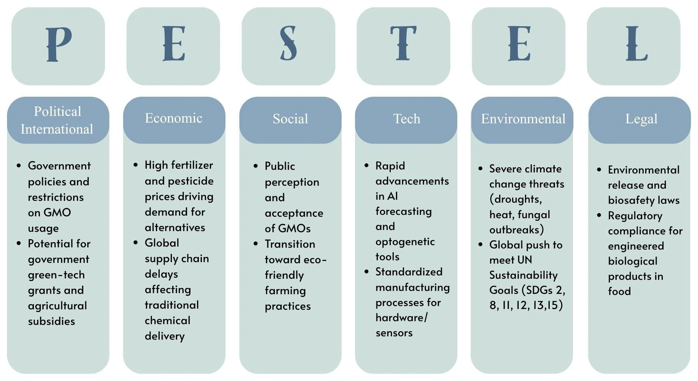
Figure 8. PESTEL. Political and legal are the two columns that set our timeline: GMO restriction decides where we may sell, and biosafety law decides what evidence we must produce first. Economic and social are the two that decide whether anyone buys: fertilizer and pesticide prices are rising, and public acceptance of GMOs is not.
Market
Sizing
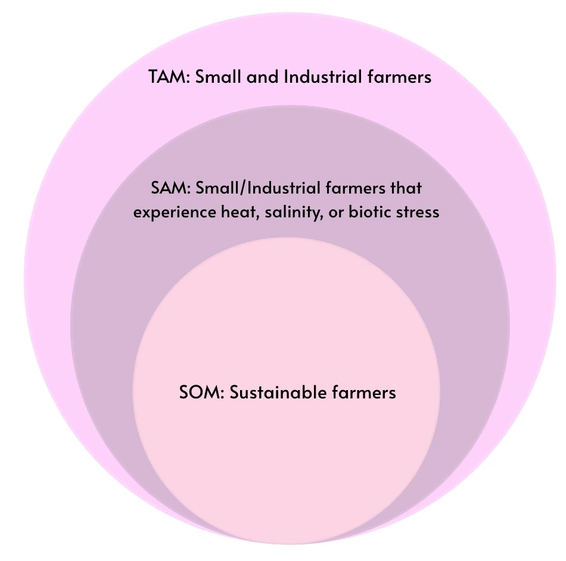
Figure 9. Total, serviceable and obtainable market. The middle ring is the one that matters: we are only useful to a farm that is actually under the stresses we target.
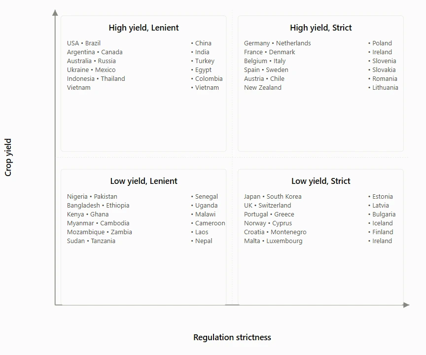
Figure 10. Where the crops are against how hard the rules are. The top-left quadrant, high yield under lenient regulation, is the commercial target. The top-right is where the clearest legal pathway happens to be. Section 11 is about that disagreement.
Total addressable market. About 570 million farms worldwide, with over a billion people working in farming and the wider agricultural sector [6].
Serviceable available market. About 399 million farms, taken from the 70% of farmers who report being affected by climate stress.
Serviceable obtainable market. Hard to quantify, because “sustainable farming” has no registration to count. The nearest countable proxy is roughly 4.7 million certified organic farms worldwide, which is a poor fit: ReLeaf is not organic-certifiable.
The industry
The global crop protectant market is valued at 77.17 billion USD [7]. The slice we would sit in is bioprotectants, where the active component is biological: 9.4 billion USD in 2024, projected to 22.8 billion by 2030. Against that, the chemical fertilizer and protectant market reached 216.52 billion USD in 2025 and is projected to 299.69 billion by 2030. The bioprotectant market is the smaller one and the faster one, and that is the position we are entering.
The large positions are held by Bayer, BASF, Syngenta and Corteva, all of whom have expanded biological portfolios through acquisition and investment. Specialists including Koppert, Valent BioSciences, Andermatt Biocontrol and Rovensa Next work in microbial, botanical and beneficial-insect technologies. In Taiwan the company closest to us is CH Biotech (正瀚生技), which sells spray-type bioprotectants and which we have met; they are a competitor and a plausible partner at the same time.
Opportunities and challenges
Resistance to chemical pesticides keeps rising, which pushes growers to look for something else, and the climate movement has accelerated the shift to sustainable practice. What the shift has not produced is a system that responds in real time. Weather has become unpredictable enough that traditional experience no longer reliably anticipates it, and that is the gap ReLeaf is built into: sense the stress, make only the protectant that stress needs.
The honest list against it is longer. ReLeaf is unlikely to outperform the best chemical solutions, and it cannot match their price without giving up revenue entirely. Because it contains a GMO it faces extensive testing, usage restrictions and close surveillance in the EU, Australia and Taiwan, and a buyer may need a licence to operate one. Public unease about synthetic organisms is real and will not be argued away by a datasheet. And if B. subtilis survival in the cartridge turns out to be short, replacement frequency becomes an operating cost that lands hardest on exactly the growers we are trying to reach.
Where we stand
What no competitor we found does is respond. Every alternative either senses and reports, or treats on a schedule a human sets. ReLeaf produces only when a threshold is crossed, in the amount that farm needs, against the specific stress detected, and it does sensing, decision and production in one unit. That is the claim. It is also the claim that field trials have to prove before we may put a number next to it.
Stakeholders
We sorted everyone with a stake in ReLeaf by how much influence they hold over the project and how much interest they have in its outcome, which is how we decided where our attention went. The full record of what each conversation changed is on Integrated Human Practices; what follows is the commercial reading of it.
Figure 11. The influence–interest grid. Conventional smallholders sit in the top-right quadrant because they are the market: 97% of farmland worldwide is conventional, so a product that only convinces sustainable growers has already lost most of its buyers.
Manage most thoroughly
Small-scale farmers are the beneficiaries and have the least market power, which is precisely why they have to stay involved throughout. Within them, conventional farmers are the group that decides the size of our market: only 3.47% of Taiwan's farmland was organic or eco-friendly in 2024 [8], and 2.1% of agricultural land was managed organically worldwide in 2023, so over 97% of farmers are conventional. Sustainable farmers are smaller in number and larger in credibility; convincing them that engineered B. subtilis pollutes nothing is a validation we can cite to everyone else. Industrial farms are the revenue and the scale test, and their crop data is how yield consistency gets proved. Yes Health iFarm is a Taiwanese indoor vertical farm doing precision, pesticide-free growing; we treat them as a competitor whose approach we can learn from without copying. Professors and researchers shape the design and the experiments, and take our sensor data back into their own work.
Keep completely informed
CH Biotech already sells protectants in Taiwan and abroad, so they are the shortest route to understanding both the expansion path and the regulation. Agricultural distributors know purchasing behaviour, price sensitivity and product objections because they talk to farmers every day, and they own a supply chain we would otherwise have to build.
Anticipate and meet needs
Government has limited interest in our social impact and total control over whether we may sell, so certification and compliance stay current whether anyone asks or not. The World Vegetable Center has global reach in agricultural development, and their network is the one that could scale our impact beyond a pilot. The Agricultural Research and Extension Stations, the Taiwan Agricultural Research Institute and Academia Sinica hold the scientific credibility and the knowledge of real Taiwanese field conditions our design needs.
Regular minimal contact
Agritalk is a competitor whose analysis we follow and whose decisions do not govern ours. Schools and students and the general public do not affect the product's development and do carry our commitment to inclusivity and to changing behaviour over a longer horizon than a product cycle.
Customer discovery
Nothing below started as our idea. Each of these meetings changed a specific line in the business plan, and we have written down which line, because a plan that survived every conversation intact would only mean we had not listened.
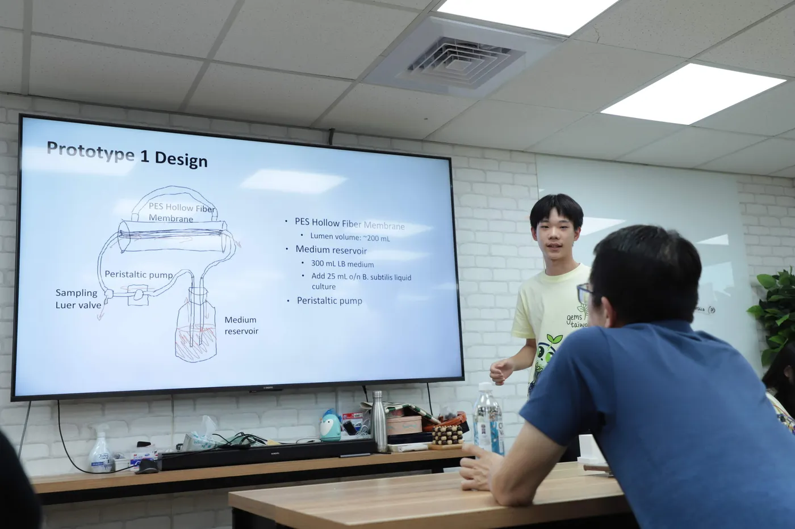
10 April, 20 June, 5 September
Prof. Chen Wen-liang (陳文亮)
What he said. Do not plan for the local market alone, because its size caps the revenue. Expect resistance on farmer adoption, on competing with chemical fertilizer, on market size and on regulation. Treat the bioreactor as a printer and the B. subtilis as its ink cartridge. Later: treat a ReLeaf database as an asset in its own right.
What changed. We dropped competing with chemical fertilizer on price, because we cannot. The printer-and-ink framing became the hardware-plus-cartridge revenue model this page is built on, and data monetisation entered the plan as a second revenue stream. The regulation research widened from Taiwan to international.
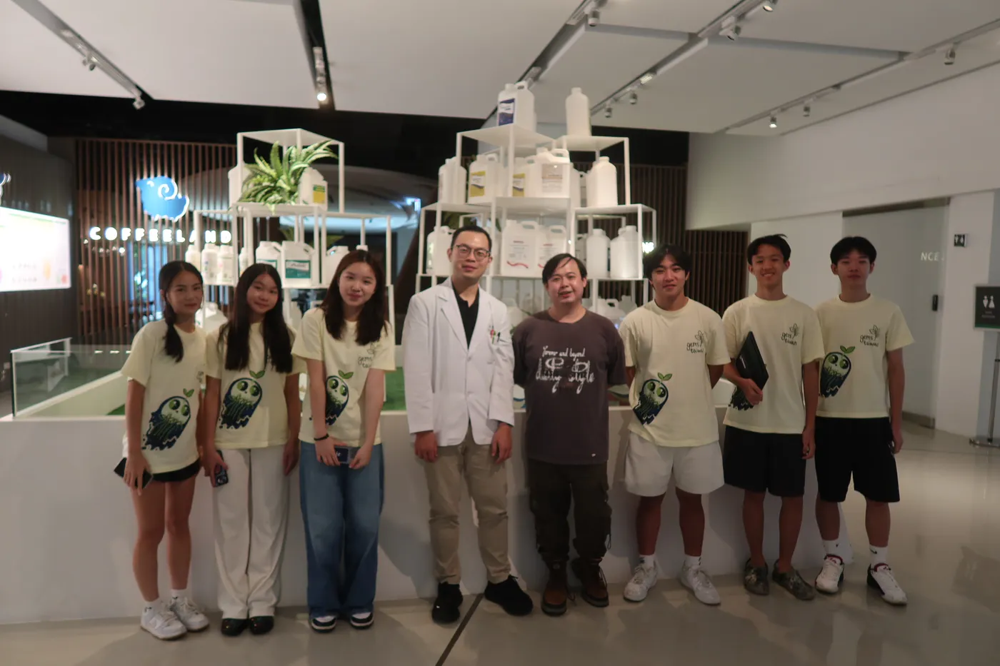
9 July
CH Biotech (正瀚生技)
What they said. Research the regulation in Taiwan and in every country you intend to expand into, before you take any action that assumes an answer.
What changed. Regulation moved from a late-stage checklist to a barrier to entry, with its own section in the plan and its own page on this wiki. The briefing slides they showed us are reproduced on Laws and Regulations.
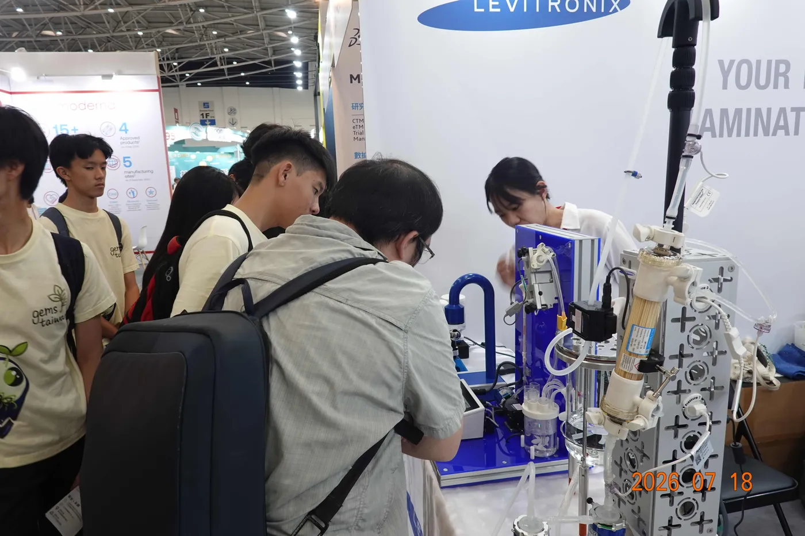
18 July
BIO Asia-Taiwan exhibition
What they said. A vendor suggested looking harder at Southeast Asia: large agricultural sectors, and looser rules than the United States or the EU.
What changed. Southeast Asian regulation went on the research list, and the expansion sequence after Taiwan was drafted around the Philippines and Vietnam. That sequence is now the open question in section 11.
21 July
Ms. Chen, Happy Farm, Tamsui
What she said. She farms organically and hands-off, which puts her at the far end of the spectrum from us. Her objection was not about safety: propping a plant up from outside may stop it developing its own resilience.
What changed. That argument went into our weaknesses as written, not paraphrased, and the plan now distinguishes between farmer types instead of treating “the farmer” as one buyer. Her perspective is why organic certification is handled as a market we are excluded from rather than one we will eventually win.
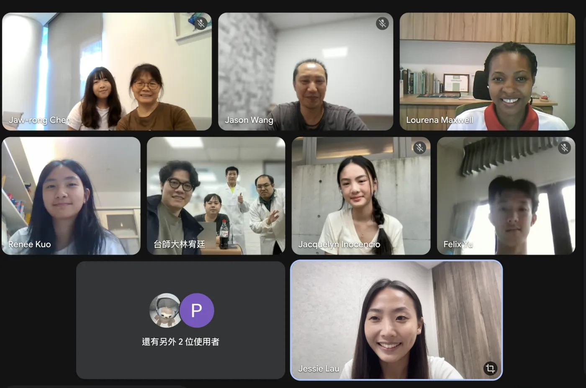
22 May
World Vegetable Center
What they said. Acceptance among traditional and natural farmers depends on demonstrating that the product is environmentally safe, beneficial and sustainable. That means evidence on GMO use, escape and containment, not assurances.
What changed. Containment evidence became a deliverable of the plan rather than of the lab: escape-frequency assays, membrane integrity testing and kill-switch documentation are listed as the regulatory submission in section 11.
11 August
Yes Health iFarm (源鮮智慧農場)
What we found. Controlled-environment agriculture already solves crop stress completely, at a capital cost no smallholder will ever meet.
What changed. It set the honest boundary of our claim. ReLeaf is not better than a vertical farm at protecting a crop; it is the version of that protection a one-hectare farm could own. The comparison with numbers is on Sustainability.
One more conversation changed the pricing case without producing a photograph. At Taiwan SMART Agriweek on 9 September we learned that young farmers are the likely first adopters and that older farmers need a different argument entirely; that GMO regulation will be the hard part; that one device doing the work of several products is a genuine price advantage we had been underselling; and that government programmes may subsidise a tool like ours. Our pricing was finalised against what BioBar and AgriWeather actually charge, and the target user narrowed, because of that day.
Competitors
We grouped everything we found by what it can and cannot do, because the useful question is not who else sells a biostimulant but which part of the loop a competitor leaves to the farmer. Every product below leaves at least one part.
Abiotic protection only
Product
What it does
What it leaves to the farmer
Earth Microbial En-Stim
A microbial inoculant with endophytic bacteria, applied to improve growth, root development and nutrient uptake, and to raise tolerance to drought, heat and disease. Already selling, with customers.
Regular or early application, by hand, on a schedule the grower judges.
CH Biotech (正瀚生技) Radiant (富肽)
A signalling-peptide formulation that regulates plant physiology, protecting photosynthesis and membrane integrity during heatwaves, drought and frost. Chemically optimised to eco-friendly and organic standards.
Everything except the chemistry: no detection, no timing, no dosing. High operational risk if the window is missed.
APOLO Biotech Plant Modulation RNA
A non-GMO topical spray of exogenous non-coding RNA that temporarily alters epigenetic marks so a crop can adapt to frost or heat. Degrades naturally, leaves no synthetic residue.
Manual mixing and misting across the field, with no sensors and no digital trigger.
Biotic protection only
Product
What it does
What it leaves to the farmer
Microbes Biosciences Rhizogen® LF+M
A liquid Bacillus and mycorrhizal formulation applied as a drench, root dip or foliar spray, using antibiosis, competition and siderophores against specific diseases. Blends into existing liquid mixes.
Mixing, measuring and spraying. No abiotic sensing at all, and it cannot adjust itself.
APOLO Biotech Exogenous dsRNA
Topical double-stranded RNA triggering RNA interference to silence essential genes in Botrytis and Fusarium, a precise vaccine for a named pathogen.
Application precision. The protective effect depends entirely on the human spraying it, and the first products are still in development.
Alert systems
Product
What it does
What it leaves to the farmer
AgriWeather
An AIoT platform pairing soil sensors with weather forecasting in an accessible mobile app, calculating field needs and driving multi-pathway irrigation devices. Government-backed and field-tested.
The biology. It is an automated valve system with no synthesis, dosing conventional fertilizer and pesticide. Around 60,000 TWD for the sensor set and 80,000 to 150,000 TWD for the dosing device.
AgriTalk
Precision-farming AIoT joining local soil and weather sensors to cloud computing, predicting disease, managing pests and regulating fertigation and drip irrigation remotely. Self-diagnoses faulty sensors.
Installation and maintenance of control boards, sensors and valves across the field, plus calibration and custom rule mapping. Hard for a smallholder to set up.
Averra Nova Device
A portable diagnostic using hydrogel-embedded microbial biosensors and microfluidics for on-site testing of bioavailable heavy metals in soil and crops. Field readings in minutes.
The treatment. It is a warning instrument; it cannot treat or filter the soil it tests.
PlantDitech PlantArray
Measures plant growth and water balance in real time and releases water and fertigation automatically against the result. Accurate, detailed, and handles many conditions at once.
Training and setup. Abiotic only, and it can release only what dissolves in water.
Partial dual protection
Product
What it does
What it leaves to the farmer
Microbes Biosciences Soil Cure
A seven-strain Bacillus soil amendment and seed treatment that raises induced systemic resistance and drought tolerance together, and improves nutrient mineralisation enough to cut fertilizer use.
All detection. Passive action with no ability to sense conditions, and it depends on the live bacteria colonising the root zone successfully.
BioWorks RootShield® PLUS+
A Trichoderma biological fungicide that grows with the expanding root system, protecting against Phytophthora, Pythium and Fusarium for up to twelve weeks from one application.
Timing, with no margin. No sensing or feedback, and if the fungi fail to colonise before an outbreak arrives the crop is not saved.
ARBICO Organics BONIDE® Revitalize®
A preventive biological fungicide and bactericide using Bacillus amyloliquefaciens D747, applied as foliar spray or soil drench, which triggers the plant's immune response and outcompetes pathogens.
Mixing and spraying, with no detection, and it is ineffective as a cure once an infection has taken hold.
The summary
ReLeaf is a decentralised, on-site, on-demand field factory. Hardware-only platforms such as AgriTalk or a smart control box give data and automation and never produce a treatment. Averra detects heavy metals and cannot remove them. Biostimulant and biopesticide platforms such as APOLO Biotech, BioWorks and Robigo produce a good treatment and hand every application decision back to a person. We make the treatment where it is needed and apply it when the sensors say so, which removes the human error and the timing loss in the middle. No product we found sits in that quadrant.
Going to market
Who we sell to first
We sell to organisations before we sell to individuals. A cooperative, a research farm or an extension office brings scale, credibility and a training route in one relationship, and a smallholder who sees a device working at their own cooperative has better evidence than any brochure we could write. The sales objectives follow from that.
5–10
2026 · Taiwan pilots
Units in controlled field settings with cooperatives, research institutions or district extension stations, to validate real-world protectant production and containment.
25–30
2027 · conversion
Pilots become multi-year supply or service agreements, active units expand across target crop regions, and cartridge and media replacement becomes recurring revenue.
100+
2028 · first region
Entry to a regional market, more cooperatives and commercial farms, and break-even on regional hardware manufacturing and distribution.
500+
2029 · scale
Distribution beyond local markets, with a target of 85% or better retention on annual cartridge subscriptions.
By 2030 the plan targets 500 to 1,000 or more active deployments across Asia, the United States and Europe, with cartridge and media sales as the primary revenue driver rather than hardware. The sales process itself stays the same through all of it: meet growers at expos, farming associations and sustainability events; run a one-season pilot of 5 to 10 systems with training and support included; convert what works into a purchase or partnership; and hold it with continuous technical support, maintenance, customisation and performance monitoring.
Distribution
At launch we will not be large enough to sell directly at any useful volume, so distribution runs through middlemen who buy from us and sell on. They have the connections to farmer types and regions that we would otherwise spend years building. It is business-to-business, and it is indirect on purpose.
Promotion
The target is conventional smallholders, so the promotion is built entirely around them. We reach them through local agricultural institutions, extension stations and cooperatives. The interface is designed to prove the point before anyone reads a word about it: a heavy-duty single button and mechanically keyed cartridges, so operating the device requires no digital skill.
To lower the risk of trying it, a free trial period comes first, backed by seasonal rental, shared ownership, or a subsidy funded by government collaboration or our own margin, so that the cost stays at or below what a farm already spends on fungicide. The hardware is introduced before the cartridges, so that reliability is established before trust in the biology is asked for. Once a grower sees the target improvements, a referral discount programme opens their network to us.
Figure 12. The marketing year, in six tracks. Credibility is built in the first two quarters through publication and industry outreach; pilots and licensing follow in the second half, so that nothing is being sold before there is something to point at.
The six tracks each do a separate job. Publications and digital build scientific credibility through research papers and an official site. Industry outreach pitches containment and dual-stress protection to the agricultural technology and synthetic biology trade as a new category, with press tied to concrete milestones so the narrative never runs ahead of the data. Conferences put growers and academics in the same room across the summer. Pilot programmes run nine months in total, a three-month trial and then a six-month one built on its feedback. Sales and partnerships start with lab sales and spend a quarter acquiring the licensing the market requires. Educational outreach reaches a younger audience through school kits and an activity site, which is where trust inside a farming family starts.
Regulation
ReLeaf cannot enter a market because the biology works. Each of its three components is regulated separately, and each has to be classified, assigned to an authority, and cleared before anything is sold. We treat that as a barrier to entry and a prerequisite, not as paperwork at the end.
bioreactor → device conformity · engineered culture → GMO contained use · cell-free output → fertilizer, biostimulant or pesticide
The Taiwan pathway
Taiwan restricts living modified organisms and GMO field release tightly, through the Ministry of Agriculture and the Animal and Plant Health Inspection Agency. There is a route through it. If the engineered bacteria never leave the sealed device, the system can be treated as contained-use equipment instead of an environmental release, and ReLeaf is cell-free by design: what is discharged is non-living protein, while cells stay behind a 0.22 µm hollow-fibre membrane with genetic kill switches behind that. Proving absolute containment to the regulator is what opens the contained-use pathway.
The submission is an evidence package: escape-frequency assays, membrane integrity testing, kill-switch efficacy documentation, housing durability testing, and field-trial protocols showing no bacterial release across a pilot deployment. We would run it with government-recognised testing units, TARI and the Tainan District Agricultural Research and Extension Station among them, so that the containment claim is verified by somebody other than us.
The second decision is what the output is called. Under the Fertilizer Management Act a plant biostimulant needs roughly 20 days to prepare a specification report and about 7 days of government review, so a registration certificate takes about a month. Registering the same material as a biopesticide means three to five years, multi-season field trials by accredited stations, GLP animal toxicology, and the capital to pay for all of it. So we register AtLEA14 and ACCD as biostimulants under the fertilizer pathway, keep every claim on the label to abiotic-stress tolerance, and file for a biopesticide designation for NaD1 later only if demand justifies it. Implying pesticidal efficacy anywhere in our marketing would move the product into the pesticide framework by itself.
Which market comes second
After Taiwan, the plan disagrees with itself, and we would rather show the disagreement than hide it behind a decision we have not made.
Market
Position in the plan
Basis
European Union
First-priority market in the regulatory conclusion; “long-term horizon only, avoid for immediate entry” in the legal-considerations table.
Regulation (EU) 2019/1009 PFC 6(B), non-microbial plant biostimulant for abiotic-stress tolerance, is the clearest existing fit for our output. Against that, the precautionary principle and long approval times.
Philippines
Primary expansion, easiest early adoption.
A mature contained-use GMO framework under NCBP/DOST with long-standing published guidance; roughly 1 to 2 years across device, culture and output.
Vietnam
Secondary, medium-term scaling.
A large vegetable industry, severe Mekong Delta salinisation that AtLEA14 targets directly, and a national mandate to cut pesticide residue. Roughly 1.5 to 2.5 years.
United States
Tertiary.
Output registered state by state under fertilizer frameworks, which avoids federal FIFRA jurisdiction only if claims stay strictly on abiotic-stress resilience. The engineered strain sits federally with USDA-APHIS and EPA under TSCA.
Thailand, Indonesia
Later Southeast Asian expansion.
Contained-GM regulation that a biosafety level 1 or 2 case can satisfy; in Indonesia the culture falls under PP No. 21/2005.
The full country-by-country analysis, and the component-by-component reading of Taiwan, the EU and the United States, is on Laws and Regulations.
Development plan
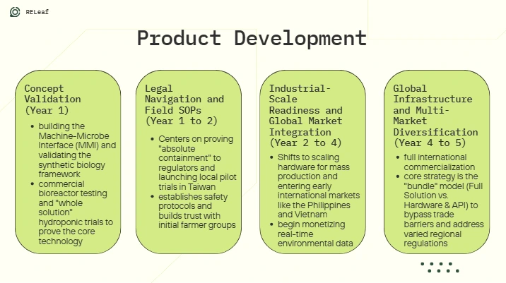
Figure 13. The four development phases as they are pitched. Each one is a gate: the phase after it cannot start until the evidence the phase before it produces exists.
Year 1 · concept validation
Prove the circuit and the interface
Build the synthetic biology framework and reach laboratory proof-of-concept: validate the shuttle vector and the ccaSR light-responsive system in B. subtilis, optimise electroporation, and construct the PCB, light-sensor and transcriptional-output modules. Benchmark AtLEA14 and ACC deaminase expression under 535 nm green against 670 nm red to get a fold change. Test prototypes on Arabidopsis thaliana under controlled salinity and heat stress, measuring fresh weight, chlorophyll, germination and rescue against controls.
By the Jamboree, demonstrate a working Machine–Microbe Interface: reversible, light-controlled secretion of AtLEA14, ACC deaminase and BoPep4 inside a contained bioreactor. File the IP on the strains and the circuits. Then move from liquid media to soil in the lab, to characterise how the protectant diffuses.
Years 1 to 2 · legal navigation and field SOPs
Make it legal in Taiwan and prove containment
Define the identity, concentration, purity and efficacy of BoPep4, AtLEA14 and ACCD precisely enough to meet the Ministry of Agriculture's specification for plant growth auxiliary materials, and secure a fertilizer registration certificate under the labelling and advertising rules that come with it. Formalise physical containment standards for the 0.22 µm membrane and test the genetic kill switches to the standard a field-trial permit requires.
Consult TARI and the Tainan District Agricultural Research and Extension Station on real field conditions, and partner with Academia Sinica and National Chung Hsing University on the hardware and circuit design. Deploy 20 to 50 prototype devices with 20 to 70 farmers, targeting 20 to 30% fewer fungicide applications per season and a 10 to 15% yield improvement under stress. Introduce the hardware first and the protectant cartridges once the infrastructure has earned trust.
Years 2 to 4 · industrial-scale readiness
Scale the machine and open the first export market
Deploy 150 to 400 units across cooperatives and pilot programmes, reaching 500 to 1,500 farmers, as early commercial revenue starts. Moving past lab scale means solving mass transfer, heat removal and oxygen distribution, with automated cooling and sensing to stop inhibitory metabolites building up. Production cost target: down 30 to 40% through manufacturing optimisation.
The business model shifts here too, from direct hardware sales towards licensing with large distributors, and data monetisation activates as a second revenue stream: anonymised real-time climate and soil data used internally to optimise the product and sold externally for market research. Partner with the International Rice Research Institute and regional state universities for pilots in the first export market.
Years 4 to 5 · global infrastructure
Two bundles, several regulatory regimes
Deploy 500 to 1,500 units across two or three territories, reaching 3,000 to 10,000 farmers mainly through large regional cooperatives, with manufacturing moving from local assembly to global contract manufacturing and unit cost down 50 to 60% against year one.
Regional weather and stress profiles differ too much for one product, so the offer splits. Bundle A is the complete bioreactor pre-packed with our biological cartridges, for high-yield enterprise farms in territories with a settled containment framework. Bundle B is the hardware standalone with a software API and universal growth media, letting corporations, university labs and distributors program the dosing logic and culture their own locally isolated strains. Bundle B is how the product crosses a border that would refuse Bundle A.
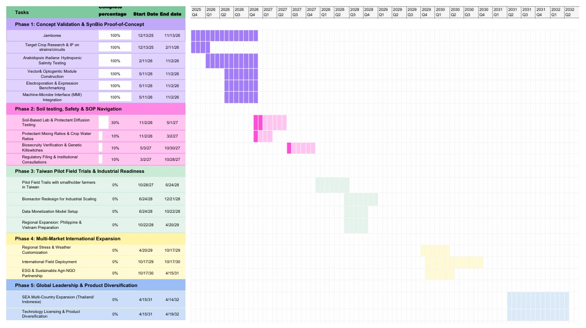
Figure 14. The same plan against a calendar. Phase 1 is complete; phase 2 is partly complete; everything from phase 3 onward is at zero and dated.
Money
Cost and break-even
The cost model as it stands has two fixed components and one variable one.
Item
Quantity
Cost
Machine costs
25
$55,467
Labour
1
$33,570
Total fixed cost, annual
$89,097
Experimental materials
1 batch
$201.55
Packaging, screw vial and outer
1 unit
$0.75
Total variable cost per unit
$201.55
Break-even units are fixed cost divided by the contribution per unit, which is the selling price less the variable cost. We cannot finish that calculation, because the selling price is the number section 3.4 has three of. Until it is settled, the break-even point and the break-even sales figure stay empty, and this page says so instead of printing a number that would be made up.
Funding
Funding is planned in three stages, because what an investor needs to see changes completely between them.
Stage 1, to the Jamboree. A working prototype, validated peptide expression and secretion, characterised AND-gate responses, cell-free delivery feasibility, and preliminary safety and efficacy data. Likely sources are school and university innovation funding, small grants from biotech companies, and Taiwanese education grants. What they want to see is early proof-of-concept data, stakeholder engagement, and a clear difference from existing agricultural technology.
Stage 2, post-iGEM validation. Moving from laboratory prototype to field-relevant system: small-scale crop trials, efficacy under combined abiotic and biotic stress, and improved stability and manufacturability. Sources are Ministry of Agriculture innovation programmes and comparable agricultural schemes. What they want to see is safety validation, evidence of farmer demand, a cost feasibility analysis, and evidence of crop benefit.
Stage 3, first commercial pilot. Deploying with real farmers to test adoption and usability, validating seasonal economics, and preparing the regulatory submission. Sources are agricultural biotechnology investors, climate tech venture funds and sustainable agriculture accelerators. What they want to see is field trial data, a clear regulatory pathway, a scalable manufacturing plan, evidence of adoption, and a defined target market.
Risks
The risks that would end this project are containment failures and adoption failures, and they are not equally likely. Containment has three independent layers, so one failing does not release anything. Adoption has one layer, which is whether a farmer believes us.
Risk
What would happen
Likelihood
What we do about it
Membrane permeability Technical
If the molecular-weight cutoff is too small or diffusion slower than expected, the protectant does not reach the plant at a useful concentration and the device fails even though the biology worked.
Medium
Test permeability before the Jamboree with purified or tagged peptide. If passage is too low, move to a larger cutoff or change the delivery design without weakening containment.
AND-gate reliability Technical
The high-temperature, high-humidity circuit may not activate reliably at the intended thresholds, so the biotic module releases too early, too late or inconsistently.
Medium
Characterise the gate across the threshold range and report where it is unreliable rather than where it works.
Kill-switch failure Biological
Mutation, incomplete penetrance or leaky expression lets engineered cells survive outside the device. A biosafety risk and a regulatory one.
Low
Test efficacy under nutrient deprivation, temperature extremes and osmotic shock, quantify escape frequency and publish it. This is one of three independent layers, so its failure alone releases nothing.
Membrane leakage Biological
A miscalibrated, damaged or degraded membrane lets whole cells, 0.5 to 4 µm, into the environment. Regulatory rejection and lost trust, whether or not the device worked.
Low to medium
Verify the cutoff experimentally against B. subtilis cell size, run accelerated degradation testing under simulated field conditions, and build integrity checks into a maintenance schedule a farmer or extension officer can run monthly.
Housing breach Physical
A cracked or degraded housing exposes the bacterial compartment directly to soil, bypassing two containment layers at once. The most direct release pathway there is.
Low
Stress-test for moisture, temperature cycling, mechanical handling and soil microbes. Design the compartment to show visible proof of tampering, so a breach is detectable without instruments, and route damaged devices to collection points.
Farmer distrust Market
Growers used to familiar sprays distrust a sealed biological device, and early adoption stalls even though the science is sound.
Medium
Farmer-facing language, not technical language: fewer spray days, less loss in hot and wet seasons, less daily monitoring. Pilot with cooperatives and extension offices already interested in precision agriculture, and build local testimony before broad sales.
Slow institutional adoption Market
Cooperatives, NGOs and extension offices wait for multi-season evidence, and distribution is delayed despite scientific validation.
Medium
Design first-year pilots small, measurable and short, around crop-loss reduction, spray events avoided and farmer satisfaction, so a documented win exists inside one season.
Production cost Financial
Device, cartridge, membrane and culture cost more than a smallholder or cooperative will pay, and the technology works for nobody who needs it.
Medium
Run the sensitivity analysis at 20% higher cost and 20% lower price. If direct purchase is unaffordable, move to cooperative purchasing, NGO bulk purchase, seasonal rental or cartridge subscription.
Classification of cell-free output Regulatory
BAPHIQ may treat secreted compounds from engineered bacteria as requiring GMO approval even with no living release, delaying field testing and partnerships.
Medium
Seek written guidance before any field or greenhouse deployment, and keep all testing contained and lab-based until the position is clear.
Organic incompatibility Regulatory
The product cannot be certified organic because it is produced using engineered bacteria, which closes off a market segment.
Medium
Do not position ReLeaf as organic. The primary market is conventional smallholder vegetable farmers, and the message stays on reduced chemical input, crop protection and sustainability.
Growth and exit
Two things can extend the product without rebuilding it. One is the crop and stress pairing: the same hardware and model with different cartridge contents covers drought with soil pathogens for rice, salinity with bacterial disease for coastal farming, heat with virus vector control more generally, and the bioreactor sold alone for a customer who wants to culture their own strain. The other is the aging of the farming population. A device that removes the daily walk of the field lowers the experience a new farmer needs to start, which is a different sale to a different person from the one the rest of this page describes.
Three exits are open, and they are genuinely different futures.
Acquisition by an agrochemical or agricultural biotechnology company such as BASF, Corteva or Bayer. They gain the strain, the hardware, the circuit and the data, and enter this segment quickly. For an investor it is the low-risk route.
Regional licensing to local manufacturers in each target market, instead of building contract manufacturing territory by territory. The partner already knows the supply chain, the distribution network and the national biosafety process, which matters most in markets where regulatory trust is earned locally.
No exit. Keep operating as a social enterprise and reinvest the surplus in farmer subsidy programmes instead of returning capital. This is the only one of the three that keeps the distinction between payer and beneficiary that the whole business model is built on, and it ends as a self-sustaining non-profit rather than a sale.
Conclusion
ReLeaf puts four things together that already exist separately: optogenetic control, on-site biomanufacturing, cell-free delivery and a modular platform. What the combination gives is crop protection that responds to a measured stress instead of to a calendar, which is the gap every product we surveyed leaves open.
Three independent containment layers, a genetic kill switch, a hollow-fibre membrane and a physical housing, mean a single failure releases nothing. That is what lets us talk to a regulator with confidence and what lets us keep options open across regulatory regimes that treat GMOs very differently. Our sequencing, Taiwan first for proof and record, then the market whose framework fits our classification best, is a trade between time to market, regulatory risk and commercial opportunity, and section 11 shows we have not finished making it.
What the plan is ultimately for is not productivity. It is the livelihood of farming communities exposed to a climate they did not change: steadier seasonal income, fewer debt cycles that start with one bad harvest, land that stays in the family, and sustainable farming that is still viable for whoever farms next.
References
Liang, Y., Wei, L., Wang, S., Hu, C., Xiao, M., Zhu, Z., Deng, Y., Wu, X., Kuzyakov, Y., Chen, J., & Ge, T. (2023). Long-term fertilization suppresses rice pathogens by microbial volatile compounds. Journal of Environmental Management, 336, 117722. doi:10.1016/j.jenvman.2023.117722
Bhuyan, M. I., Supit, I., Kumar, U., Mia, S., & Ludwig, F. (2024). The significance of farmers' climate change and salinity perceptions for on-farm adaptation strategies in the South-central coast of Bangladesh. Journal of Agriculture and Food Research, 16, 101097. doi:10.1016/j.jafr.2024.101097
Panda, D., Mishra, S. S., & Behera, P. K. (2021). Drought tolerance in rice: focus on recent mechanisms and approaches. Rice Science, 28(2), 119–132. doi:10.1016/j.rsci.2021.01.002
Samat, A. T., Soltabayeva, A., Bekturova, A., Zhanassova, K., Auganova, D., Masalimov, Z., Srivastava, S., Satkanov, M., & Kurmanbayeva, A. (2025). Plant responses to heat stress and advances in mitigation strategies. Frontiers in Plant Science, 16. doi:10.3389/fpls.2025.1638213
Agriculture and Food Agency, Ministry of Agriculture, Taiwan. Organic and eco-friendly farmland, 2024. afa.gov.tw
Still to be added: the business plan also cites Bray et al. (2000), Mittler (2002), Zhao et al. (2017), Ricciardi et al. (2018), Castillo-Hair et al. (2019) and Ministry of Agriculture (2024) in text, with no full entry. The bioprotectant and chemical fertilizer market values, the 70% climate-stress figure and the 4.7 million organic farms figure also need sources. Resolve before the freeze.
This page is a draft with eleven open fixes.
Each amber box above is an editorial note for the team, numbered F1 to
F11. Delete a box when its problem is resolved, and delete this box when
none are left. In order: F1 the LINE support account, F2 one price in one
currency, F3 typos in the SWOT graphic, F4 PESTEL needs its interviews
attached, F5 the obtainable market contradicts itself, F6 labels in the
stakeholder map, F7 the two competitor lists, F8 which year the marketing
year is, F9 which market comes second, F10 the Gantt against the phase
text, F11 the unfinished break-even. F2, F9 and F11 are the three that
change what the page can claim; the rest are corrections. Then set
Status in the header to Final.


![An influence-interest grid with four quadrants. Manage most thoroughly holds industrial farms, Yes Health iFarm, small-scale farmers, sustainable and conventional farming farmers, and professors, experts and researchers. Keep completely informed holds CH Biotech and agricultural distributors. Anticipate and meet needs holds government and regulators, agricultural research and extension stations, the Taiwan Agricultural Research Institute, the World Vegetable Center and Academia Sinica. Regular minimal contact holds Agritalk, schools and students, and the general public.](../assets/img/entrepreneurship/stakeholder-map.webp)